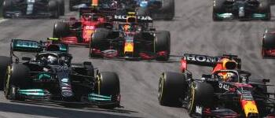
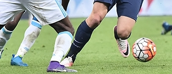

Sports
Le terme de « sport » a pour racine le mot de vieux français desport qui signifie « divertissement, plaisir physique ou de l'esprit ». Antérieurement il peut être rattaché au latin portus, comme dans transport, export, import, déporter, déport, etc., qui désignait simplement un port, un lieu de passage marin. En traversant la Manche, desport se mue en « sport » et évacue de son champ la notion générale de loisirs pour se concentrer sur les seules activités physiques et mentales.